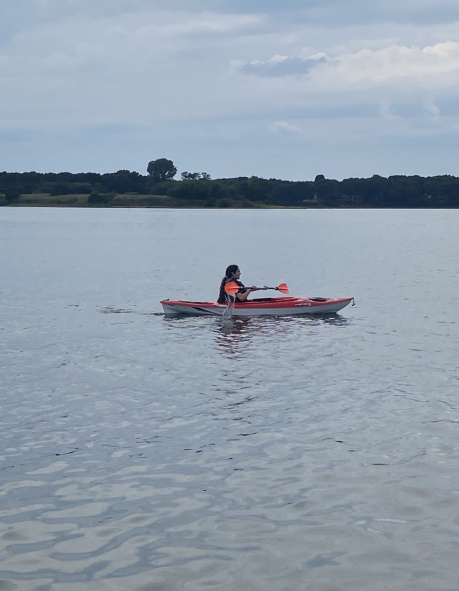
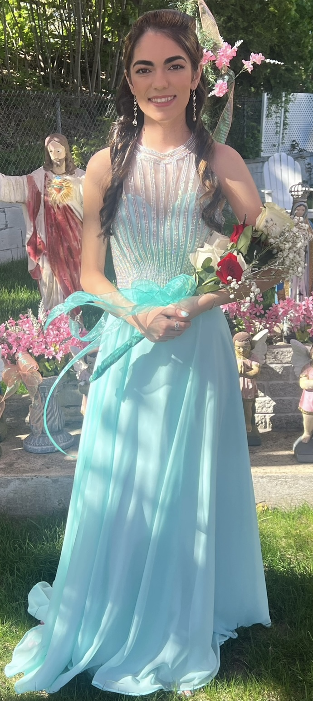
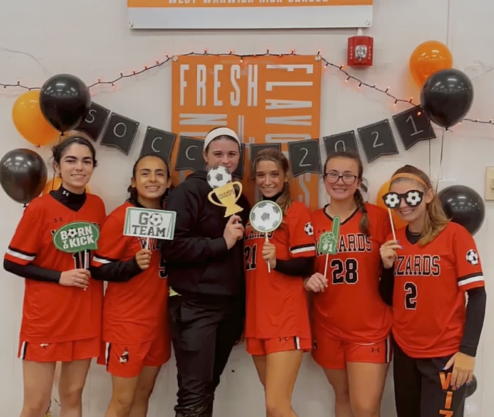

Some facts about me!
Hey my name is Lydia Nicolau I am eighteen years old and I am a computer science major at the University of Rhode Island! I grew up in West Warwick
Rhode Island and found my love for computer science in a highschool coding class. I enjoyed getting over roadblocks and the feeling of finishing a long
tedious project.